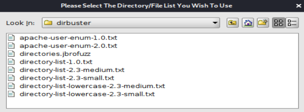
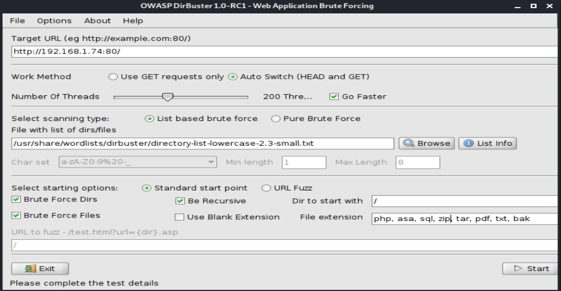
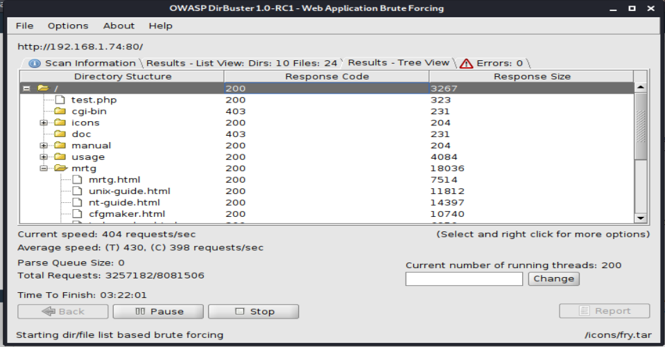
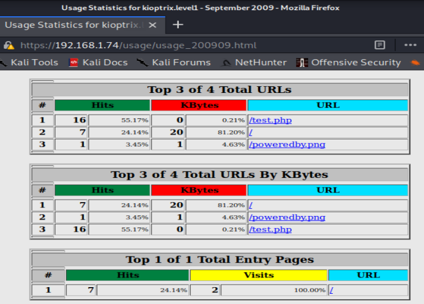

dirbuster
- Bruteforce directories
Common wordlists :
/usr/share/wordlists/dirbuster/

Target url : http://192.168.1.74:80/
Work method : Auto switch
Number of threads : Go faster (200)
Select scanning type : List based brute force
File with list of dirs/files : /usr/share/wordlists/dirbuster/directory-list-lowercase-2.3-small.txt
Starting option : Standard start point
Yes : Brute force dirs, Brute force files, Be recursive
Dir to start with : /
File extensions : php (because Apache server), asa, sql, zip, tar, pdf, txt, bak (interesting files)

See directories :

Example : https://192.168.1.74/usage/usage_200909.html
